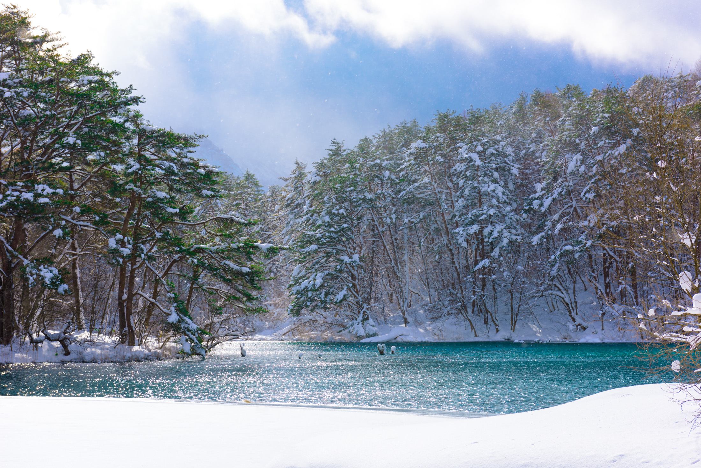
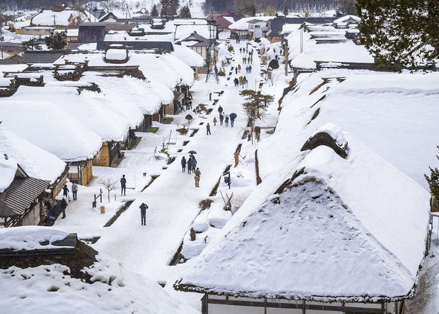
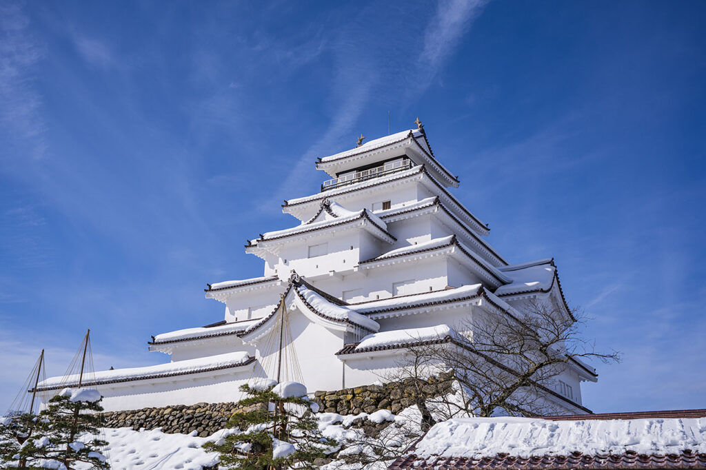
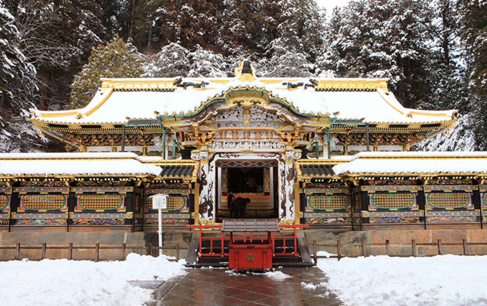
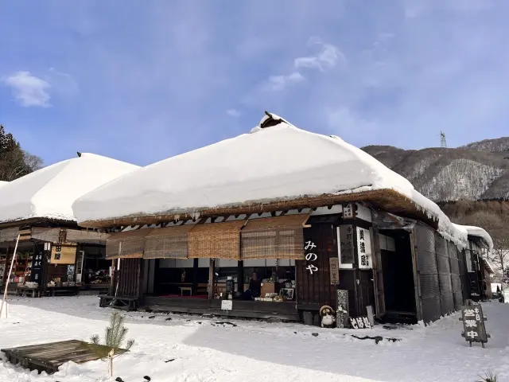

景點介紹
Attractions & Points of Interest

五色沼 (Goshikinuma)
五色沼自然探勝路 — 裏磐梯
五色沼是磐梯山腳下的火山湖群，由 1888 年磐梯山噴發所形成，包含 20 至 30 個大小不一的湖沼。因礦物質含量不同，每個湖泊呈現出藍、綠、紅、金等夢幻色彩。全長 3.6 公里的自然探勝路平緩好走，約 70–90 分鐘即可走完，冬季積雪覆蓋的湖畔景色格外迷人。

大內宿 (Ouchi-juku)
江戶時代茅葺屋宿場町
大內宿是福島縣下鄉町的江戶時代宿場町，保存了超過 300 年歷史的茅葺屋頂建築群。這裡曾是連結會津若松與日光的重要驛站，如今街道兩旁的傳統建築改為商店和餐廳。冬季時整個村落被厚雪覆蓋，宛如童話世界。必吃名物是用一整根大蔥當筷子吃的「大蔥蕎麥麵」。

鶴城 (Tsuruga Castle)
會津若松城 — 赤瓦天守閣
鶴城始建於 1384 年，是日本唯一擁有赤瓦屋頂的天守閣（2011 年修復）。這座城堡在戊辰戰爭（1868 年）中見證了會津藩武士的最後抵抗，是日本幕末歷史的重要舞台。冬季紅瓦白雪的對比格外壯觀。城內設有博物館，展示會津藩的歷史文物。

李斯特滑雪場 (Listel Ski Fantasia)
ホテルリステル猪苗代
李斯特滑雪場是日本首個舉辦 FIS 自由式滑雪世界盃饅頭賽的雪場（1988 年），主滑道平均坡度僅 8 度，非常適合初學者和家庭。酒店直通雪場，設有溫泉、泳池和健身房。從雪場可遠眺磐梯山和豬苗代湖的壯麗雪景。

日光東照宮 (Nikko Toshogu)
UNESCO 世界遺產
日光東照宮是德川家康的靈廟，1999 年被列為 UNESCO 世界遺產。神社群由 103 棟宗教建築組成，以精緻華麗的雕刻聞名，其中最知名的是「三猿」（非禮勿視、非禮勿聽、非禮勿言）和「眠貓」雕刻。冬季白雪覆蓋的金碧輝煌建築群，呈現出莊嚴而夢幻的氛圍。

華嚴瀑布 (Kegon Falls)
日本三大名瀑之一
華嚴瀑布從中禪寺湖傾瀉而下，落差達 97 公尺，是日本三大名瀑之一。冬季時瀑布幾乎完全結冰，形成壯觀的冰柱群，藍白色的冰瀑在陽光下閃耀，是冬季日光最令人震撼的自然奇觀。可搭乘電梯至觀景台近距離欣賞。

末廣酒造 (Suehiro Sake Brewery)
嘉永藏 — 1850年創業
末廣酒造創立於 1850 年，至今已傳承七代，是會津地區最具代表性的酒造之一。其「嘉永藏」被指定為會津若松市重要歷史建築，遊客可免費參觀釀造過程並試飲各式清酒。酒造使用當地米和水，釀出真正反映會津風土的美酒。

teamLab Planets TOKYO
豐洲沉浸式數位藝術美術館
teamLab Planets 是東京最受歡迎的沉浸式數位藝術美術館，由藝術團隊 teamLab 打造。遊客赤腳涉水穿越巨大的藝術空間，身體與作品的界線逐漸消融。作品會隨著人們的存在而變化，每次造訪都是獨一無二的體驗。門票透過 KKday/Klook 購買較便宜。